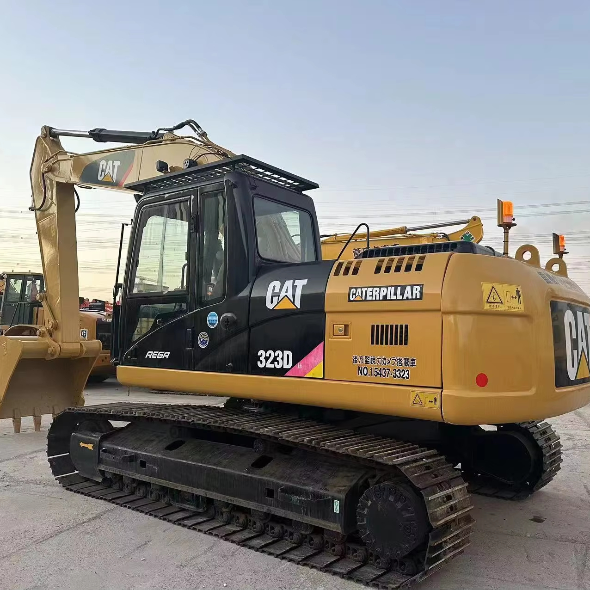

Refurbished Caterpillar Cat 323 Excavator
The Caterpillar Cat 323 Excavator is a versatile and powerful piece of machinery used across various industries such as construction, mining, and heavy-duty excavation. Known for its durability, high performance, and advanced technology, the Cat 323 is widely regarded as one of the most reliable machines in its class. When refurbished, it offers the performance of a new machine but at a much more affordable price point, providing excellent value for businesses looking to optimize their operations.
Honestly, it's almost impossible to buy a brand new excavator from China. They either don't exist or are made in China. If a Chinese seller tells you their Caterpillar/Komatsu/Volvo/Kobelco/Hitachi is brand new, they're lying. Therefore, a refurbished excavator is your best bet.

Here are the detailed specifications for a refurbished Caterpillar Cat 323 excavator, tailored for your technical documentation and consistent with your annotated library:
Operating Weight and Dimensions
- Operating Weight: 22,000–23,000 kg
- Transport Length: ~9.7–9.9 meters
- Transport Width: ~3.2 meters
- Transport Height: ~3.0–3.2 meters
- Tail Swing Radius: ~3.6–3.7 meters
- Track Width: 600–800 mm standard
- Counterweight: ~5.2 metric tons
Engine and Powertrain
- Engine Model: Cat C7.1 (Tier 4 Final / EU Stage V in newer builds; Tier 3 in older refurb units)
- Rated Power Output: ~164 kW (220 hp) @ 1,800 rpm
- Fuel Tank Capacity: ~410–450 liters
- Travel Speed: 3.5–5.0 km/h
- Swing Speed: ~11 rpm
- Altitude Capability: Up to 3,000 m without derate
Hydraulic System
- Main Pump Type: Load-sensing, variable displacement piston pumps
- Flow Rate: ~2 × 320–340 L/min
- System Pressure: Up to 35 MPa
- Hydraulic Oil Capacity: ~400–450 liters
- Smart Modes:
- Auto Dig Boost
- Heavy Lift Mode
- Auto Hydraulic Warm-Up
Performance Metrics
- Bucket Capacity: 1.0–1.4 m³ (SAE heaped)
- Max Digging Depth: ~6.7–7.0 meters
- Max Reach (Horizontal): ~10.5–11.0 meters
- Max Dump Height: ~6.5–6.8 meters
- Bucket Digging Force: ~170–180 kN
- Arm Digging Force: ~120–130 kN
Cab and Operator Features
- Cab Type: ROPS/FOPS certified
- Display: LCD monitor or touchscreen (varies by build year)
- Controls: Pilot-operated or electro-hydraulic joysticks
- Comfort: Adjustable air-suspension seat, HVAC, low-noise cab
- Visibility: Panoramic glass, optional rear-view camera, LED lighting
Smart Features and Efficiency
- Technology Suite (varies by build year):
- Cat Grade with 2D
- Grade Assist
- Payload Measurement
- Work Tool Recognition
- Operating Modes: Power, Smart, ECO
- Emissions Control:
- Tier 3: mechanical injection, no aftertreatment
- Tier 4 Final: DOC + DPF + SCR
- Ambient Capability:
- High temp: up to 52°C
- Cold start: down to –18°C
Attachments Compatibility
- Standard Bucket: 1.0–1.4 m³
- Optional Tools: Hydraulic breaker, demolition shear, ripper, compactor
- Quick Coupler: Hydraulic (Cat Pin Grabber or Smart Coupler)
Refurbishment Scope
Refurbished Cat 323 units typically include:
- Engine Overhaul: Turbocharger, injectors, cooling system, emissions service
- Hydraulic Restoration: Pump recalibration, valve block testing, hose replacement
- Electrical Diagnostics: Monitor, sensors, wiring harness, telematics
- Cab Reconditioning: Seat, joysticks, HVAC, repainting
- Structural Repairs: Boom/bucket welding, bushing replacement, undercarriage rebuild
Overview of the Caterpillar Cat 323 Excavator
The Cat 323 is a mid-sized hydraulic excavator designed to tackle a range of tasks from digging trenches to lifting and material handling. Whether you're working in tight spaces or open construction sites, the Cat 323 offers a combination of powerful hydraulics, fuel efficiency, and operator comfort that ensures maximum productivity.
With its robust design, advanced engine technology, and long lifespan, the Cat 323 is a great choice for industries that demand a machine that can work hard, day in and day out, without compromise.
Key Specifications of the Caterpillar Cat 323
-
Operating Weight: Approximately 23,500 - 25,500 kg (51,800 - 56,000 lbs)
-
Engine Power: 165 - 175 hp (123 - 130 kW)
-
Max Digging Depth: Up to 6.6 meters (21.7 feet)
-
Maximum Reach: Around 9 meters (29.5 feet)
-
Bucket Capacity: Typically 1.2 - 1.4 cubic meters (42 - 49 cubic feet)
-
Fuel Tank Capacity: About 380 liters (100 gallons)
-
Travel Speed: Up to 5.5 km/h (3.4 mph)
These specifications highlight the versatility and power of the Cat 323, which is designed for heavy-duty excavation, lifting, and grading tasks.
Performance and Efficiency
The Caterpillar Cat 323 Excavator is designed for optimal performance in both urban and rural job sites. With its advanced hydraulic system and high-performing engine, it delivers the power necessary to handle tough tasks while maintaining fuel efficiency. This makes the Cat 323 an excellent choice for businesses looking to maximize productivity without high operational costs.
Performance Highlights:
-
Hydraulic Efficiency: The Cat 323 features a robust hydraulic system designed for maximum productivity. The system provides smooth and fast cycle times, which enhances performance when digging, lifting, and material handling. It ensures that the operator can complete tasks faster, with less effort, which results in increased job site efficiency.
-
Fuel Efficiency: Fuel consumption is an essential factor for any construction equipment. The Cat 323 utilizes advanced fuel-saving technology, including a highly efficient engine, which significantly reduces fuel consumption. This makes the Cat 323 not only environmentally friendly but also cost-effective in the long run.
-
Power and Versatility: Whether you need to dig deep foundations, lift heavy materials, or grade large areas, the Cat 323 provides the power required for these tasks. Its versatile design allows for seamless operation in different types of soil and terrain, making it a perfect choice for a wide range of applications.
-
Hydraulic Controls: With the Cat 323, operators can enjoy precise control over digging and lifting operations, thanks to the advanced hydraulic system and ergonomic joystick controls. This ensures greater accuracy and reduces fatigue during long working hours.
Durability and Longevity
Caterpillar is known for producing some of the most durable machinery in the construction and mining industries, and the Cat 323 is no exception. Built with high-quality materials and engineered to withstand demanding conditions, the Cat 323 is designed to offer years of reliable service. A refurbished model offers the same longevity, as it undergoes a rigorous inspection and reconditioning process before being sold.
Durability Features:
-
Heavy-Duty Undercarriage: The undercarriage of the Cat 323 is reinforced to ensure stability and longevity, especially when working in harsh environments. Its robust design is ideal for rough terrains, allowing for a smoother ride and better productivity without the risk of premature wear.
-
Reinforced Components: All parts of the Cat 323, from the hydraulic cylinders to the boom, arm, and bucket, are designed to endure long hours of heavy-duty use. The machine’s high strength ensures minimal downtime due to repairs or part replacements.
-
Engine Durability: Caterpillar engines are known for their reliability, and the engine in the Cat 323 is no different. The engine is engineered for long-term use and will continue to perform well over time with proper maintenance.
Operator Comfort and Safety
One of the standout features of the Cat 323 is its focus on operator comfort and safety. A comfortable operator is a more productive operator, and the Cat 323 delivers in this regard with an ergonomic cabin designed to minimize fatigue and maximize efficiency. Additionally, the Cat 323 includes a variety of safety features that ensure a secure working environment for the operator.
Comfort and Safety Features:
-
Spacious and Ergonomic Cabin: The Cat 323 boasts a spacious cabin that reduces operator fatigue. It is equipped with adjustable seating, an easy-to-read control panel, and ample legroom, ensuring that operators can work comfortably for extended hours. Additionally, the air-conditioned cabin offers a comfortable working environment in all weather conditions.
-
Enhanced Visibility: The Cat 323 offers excellent visibility, thanks to its strategically placed windows and mirrors. The operator can easily monitor the worksite, reducing the risk of accidents and increasing precision during complex tasks.
-
Safety Systems: The Cat 323 comes with multiple safety features, including a roll-over protective structure (ROPS), a falling object protective structure (FOPS), and an optional rearview camera. These features ensure that operators remain protected from potential hazards, both from the machine and the worksite.
Versatility and Attachments
One of the greatest advantages of the Caterpillar Cat 323 is its versatility. The Cat 323 can be outfitted with a variety of attachments, making it adaptable for a wide range of tasks beyond traditional excavation work.
Common Attachments for the Cat 323:
-
Buckets: Whether for digging, grading, or material handling, there is a bucket attachment for every need. Options range from general-purpose buckets to heavy-duty rock buckets designed for tougher conditions.
-
Hydraulic Breakers: For demolition and breaking concrete or rock, a hydraulic breaker attachment is an excellent choice, allowing the Cat 323 to efficiently handle heavy-duty demolition tasks.
-
Augers: Augers are ideal for drilling deep holes in the ground, useful for installation projects such as fence posts or utility poles.
-
Grapples: A grapple attachment can be used for handling scrap materials, logs, or debris, making the Cat 323 perfect for sorting and material handling tasks.
-
Quick Coupler: The Cat 323 is compatible with a quick coupler, allowing for quick and easy attachment changes without leaving the operator's seat, reducing downtime between tasks.
Benefits of Purchasing a Refurbished Caterpillar Cat 323 Excavator
Opting for a refurbished Caterpillar Cat 323 Excavator offers several advantages over buying a new machine. For businesses looking to maximize their budget while still gaining access to a high-performing, durable excavator, the refurbished Cat 323 is an excellent choice.
Key Benefits:
-
Cost-Effective: A refurbished Cat 323 comes at a significantly lower cost than a new model, allowing businesses to save money without sacrificing performance or reliability.
-
Thorough Reconditioning: Refurbished Cat 323 excavators undergo a rigorous inspection process to ensure they meet Caterpillar's high standards. This includes checking and replacing worn-out parts, ensuring the machine is in top operating condition.
-
Extended Warranty: Many refurbished machines come with a warranty that protects against potential issues, providing peace of mind for buyers.
-
Environmental Impact: Purchasing a refurbished Cat 323 helps extend the life of the machine, contributing to sustainability by reducing the need for new manufacturing and the environmental impact associated with it.
Maintenance Tips for the Caterpillar Cat 323 Excavator
Regular maintenance is essential for maximizing the lifespan and performance of the Caterpillar Cat 323. Proper upkeep ensures the excavator continues to operate at peak efficiency and minimizes downtime.
Key Maintenance Recommendations:
-
Hydraulic System: Check for any leaks and maintain fluid levels to keep the hydraulic system functioning smoothly. Regularly inspect the hydraulic hoses and cylinders for wear.
-
Engine Maintenance: Change engine oil and air filters as per the recommended intervals. Regularly inspect the cooling system to prevent overheating.
-
Track and Undercarriage: Inspect tracks for wear, tension, and damage. Clean the undercarriage regularly to remove debris that could affect the machine’s performance.
-
Bucket and Arm: Inspect the bucket, boom, and arm for wear, especially if working with tough materials like rock or concrete. Replace worn components as needed.
Conclusion
The Caterpillar Cat 323 Excavator is an ideal machine for heavy-duty tasks requiring power, versatility, and efficiency. With its high performance, advanced hydraulic system, and operator-friendly features, it is a top choice for businesses in construction, mining, and utilities. By purchasing a refurbished Cat 323, businesses can enjoy the benefits of this powerful machine at a significantly lower cost while still getting reliable performance and long-term durability.
Whether you are excavating, lifting, or handling materials, the Cat 323 is designed to help you get the job done faster and more efficiently, ensuring that you stay ahead in the competitive market.
Our Commitment
- 2 years / 4000 hours warranty.
- EPA certified.
- No sweatshop labor.
Contacts

- [email protected]
- Youtube Instagram Facebook
- Navigation: G206 (Sishu Bridge) in Changfeng County, Hefei City, Anhui Province, 200 meters north to the east